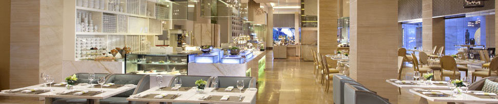
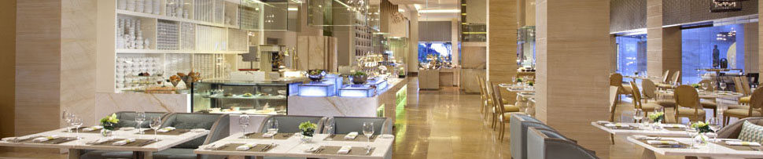

Управление продажами в HoReCa
Опишем основные направления деятельности заведения HoReCa, на которые нужно уделить особое внимание при управлении продажами в своем заведении.
- Управление продажами - это комплексное, многоплановое понятие, которое включает следующие аспекты:
- Управление персоналом (системы поиска, подбора, мотивации и обучения персонала, напрямую задействованного в процессе продаж, управление коммуникациями с гостями и корпоративной культурой).
- Управление процессами (маркетинговая политика, политика сбыта, эффективность продвижения и др.)
- Управление взаимодействием с гостями.
- Инструменты управления продажами:
- Планирование продаж. Планирование объёмов продаж, учет и анализ основных показателей придает деятельности в области продаж осмысленность, упорядоченность и прогнозируемость.
- Повышение профессионального уровня специалистов по продажам. Основной идеей при обучении персонала должен стать вопрос ориентированности на гостя, создание атмосферы гостеприимства для каждого посетителя заведения формирования лояльного отношения гостей к компании.
- Разработка стандартов обслуживания
- Внедрение системы взаимодействия с постоянными клиентами (программы лояльности). Постоянные клиенты обеспечивают компании как минимум 3 преимущества: это стабильность, репутация и сокращение расходов на рекламу. Имея надежные связи с постоянными клиентами, компания имеет возможность планировать свою работу, а значит, и доходы на более длительный срок.
Основной результат эффективного управления продажами – увеличение объёмов продаж
- Необходимые условия эффективных продаж в сфере HoReCa.
- Обеспечение качества предоставляемой услуги
- Обеспечение качества обслуживания (сервис).
- Применение системы лояльности.
- Качество предоставляемой услуги обеспечивается должностными лицами:
- Администратор обеспечивает мониторинг работы заведения, докладывает управляющему о всех возникших проблемах в состоянии и работе заведения.
- Администратор (организует работу персонала смены по обслуживанию гостей, контролирует выполнение стандартов обслуживания, решает конфликтные ситуации с гостями).
- Официант (обслуживает гостей в зале)
- Бармен (обслуживают гостей на баре).
- Качество обслуживания (сервис) обеспечивается следующими должностными лицами:
- Применение системы лояльности на практике обеспечивается следующими должностными лицами:
- Администратор (контролирует выполнение обязанностей персонала по внедрению системы лояльности, лично участвует в вовлечении гостей в систему, применяет акционные предложения).
- Официант (знакомит гостей с условиями системы лояльности, акционными предложениями, рекламирует систему лояльности, предлагает специальные предложения).
- Бармен (доводит до гостей содержание специальных предложений на баре).
Встреча гостя. Обычно гостя встречает администратор. Он предлагает услуги заведения, ресторана, выявляет потребности гостя. В случае, если гость интересуется чем-либо – приглашает к ответственному лицу за определенную услугу (официант, бармен, маркер, кассир, и др.). За стойкой бара гостя встречает бармен. Он первым вступает в контакт с гостем, не дожидаясь вопросов последнего. Он приветливо (приятный тон, улыбка, зрительный контакт) приветствует гостя, выбрав для этого вариант, соответствующий времени суток. Если бармен не компетентен в вопросах, которые задаёт гость (заказ банкета или тематического детского дня рождения, заказ по ресторану, претензия гостя и пр.), необходимо пригласить сотрудника (администратора, дежурного администратора, официанта), который предоставит необходимую услугу \ информацию и передать ему гостя.
Недопустимо оставлять гостя без внимания, перенаправлять его к другим должностным лицам, говорить «Я этим не занимаюсь».
- Расчёт гостя.
- Кассир (бармен, официант) выдаёт гостю пречек (пречеки ).
- Принимает у гостя деньги для оплаты.
- Пересчитывает полученные купюры, удерживая их в поле зрения гостя и голосом называет полученную сумму, например: «Ваши двести пятьдесят гривень».
- Проверяет подлинность купюр в детекторе банкнот.
- Выдаёт гостю фискальный чек, а также сдачу, называя эту сумму.
- Помещает деньги в кассовый ящик (только после того как гость проверил сдачу).
Примечание: Рассчитывая гостя, Кассир (бармен, официант) может применять следующие формы оплаты : • Оплата наличными, • Эквайринг (оплата банковской картой через специальный банковский терминал), • Оплата с помощью карты по программе лояльности.
.Категорически запрещается брать деньги без предоставления пречека! Сотрудник по каждому факту приёма оплаты обязан представить гостю фискальный чек! Общение с гостем по телефону.
- Персонал заведения HoReCa обязан создать условия для возможности получать консультацию по услугам их заведения, а также бронировать столик по телефону.
При ответе на телефонный звонок сотрудник обязан:
- Снимать трубку телефона не позднее третьего звонка
- Приветствовать собеседника стандартной фразой: «Ресторан (готель) «Альфа», администратор Олександр, Здравствуйте». Если сотрудник во время телефонного звонка занят обслуживанием других гостей, ему следует извиниться, ответить на звонок, и продолжить работу с гостями.